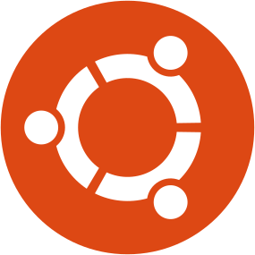
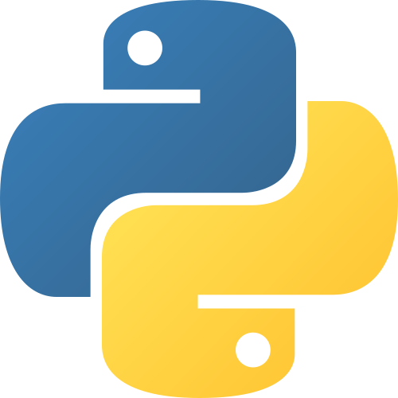
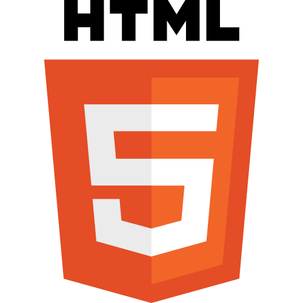
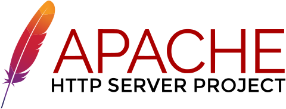
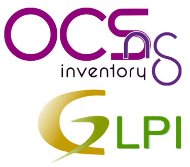

À Propos de moi
Veuillez découvrir mon parcours, mes objectifs personnels et bien plus me concernant !
Qui suis-je ?
Je m’appelle KANTE Cheick Omar, je suis actuellement étudiant à l’école IRIS, en première année de BTS SIO option SISR (Solution Infrastructure Système et Réseau) Depuis mon plus jeune âge, l’informatique a d’abord été mon refuge et est ensuite devenu une passion. Jusqu’à aujourd’hui je prends plaisir à découvrir les nouvelles technologies que l’on développe. En tant que sportif aspirant au haut niveau je mets les valeurs qui m’ont été inculquées au service de mes études, de mon travail et de mes objectifs afin de répondre aux attentes et d’acquérir un maximum d’expérience dans l’informatique.
MES QUALITÉS
Curieux
Patient
Ouvert d'esprit
Persévérant
Adaptable
Chaleureux
Objectifs professionnels
Bien qu’étant toujours à la recherche du métier qui m’irait, j’aspire à accumuler un maximum d’expérience ainsi qu’un Bachelor me permettant de me rapprocher un maximum du métier proche du domaine de la cybersécurité ou du développement qui m’ira le plus. Parmi l’expérience que j’accumule je cherche également à maîtriser un maximum d’environnement afin de développer une polyvalence quelque soit le pays ou la fonction.
MES CONNAISSANCES




